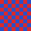

The M53 browser platform renders this real HTML page through the ported NetSurf engine: libdom built the tree, libcss styled it, and the framebuffer frontend painted text and the image below.
A styled box with a border and a coloured background.

Line one of body text.
Line two of body text.
Line three of body text.